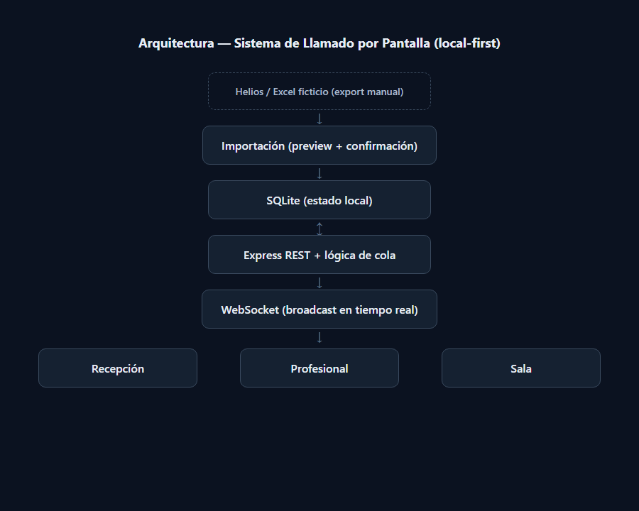
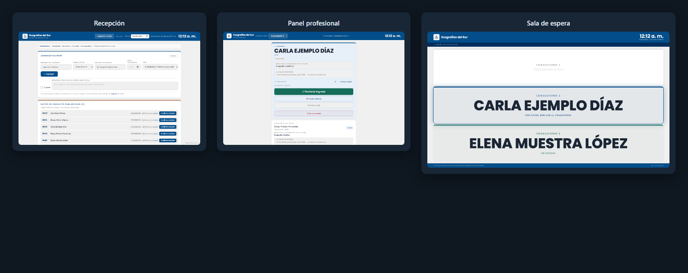
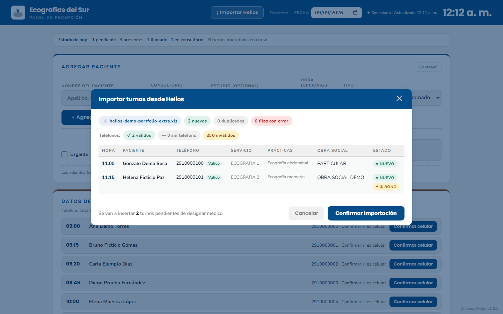
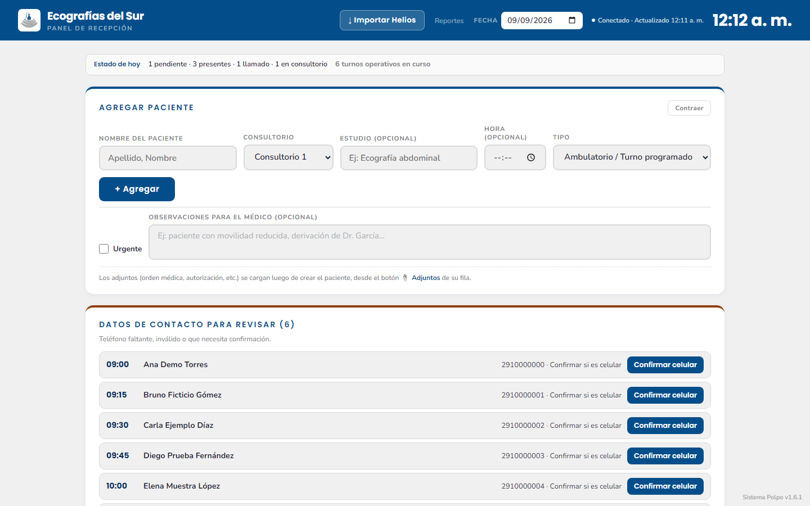
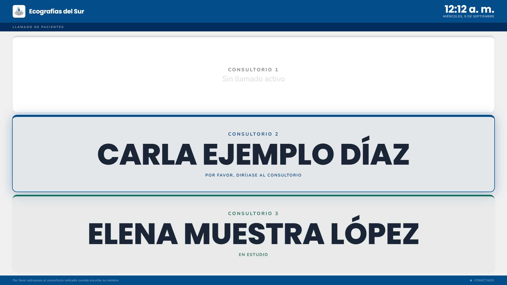

Un backend, tres superficies de uso.
El servidor Express expone las interfaces de /recepcion, /medico y /sala. Las acciones operativas modifican el estado persistido en SQLite y los cambios relevantes se distribuyen a las pantallas mediante WebSocket.
La sala usa un payload reducido para mostrar únicamente la información necesaria para el llamado.

El turno se modela como una máquina de estados explícita.
Cierra el turno desde los estados habilitados para esa acción.
llamado → presente; limpia el llamado anterior y libera el consultorio.
en_consultorio → presente; conserva la llegada y reinicia el ciclo de llamado.
Los turnos pendientes o presentes pueden moverse entre consultorios con validaciones de estado.

El ingreso de turnos se resuelve sobre archivos exportados.
El importador procesa XLS/XLSX de Helios con una etapa de preview antes del commit. El parser valida columnas requeridas, convierte la fecha serial de Excel, informa errores por fila y agrupa varias filas de prácticas en un único turno.
external_id estable para los registros importados.raw_payload_json conserva únicamente el valor crudo de fecha; el resto de columnas no se replica por defecto.
Cada pantalla expone acciones distintas sobre el mismo estado.


El despliegue también forma parte del sistema.
La instalación productiva es local sobre Windows y no utiliza Docker. El runtime estándar es Node.js portable. El servidor puede ejecutarse como servicio de Windows mediante WinSW, con arranque automático, reinicio ante caídas y logs locales.
localhost:3000/sala/ en la PC conectada a la TV.LocalSubnet; el puerto no se expone a Internet.main.Trabajo realizado en el proyecto.
01 Relevamiento del flujo de recepción, profesional y sala.02 Modelo de estados y reglas de transición.03 Backend Express, persistencia SQLite y sincronización WebSocket.04 Interfaces web para recepción, profesional y sala.05 Parser e importación de exportaciones Helios XLS/XLSX.06 Instalación Windows, servicio, backups y documentación operativa.El repositorio de operación es privado. Las capturas publicadas en este portfolio fueron generadas con datos ficticios y no exponen información de pacientes.
Sistema interno en operación. Esta página documenta arquitectura, flujo de estados, integración y despliegue; no replica datos ni configuración sensible de la instalación.
Volver a los casos